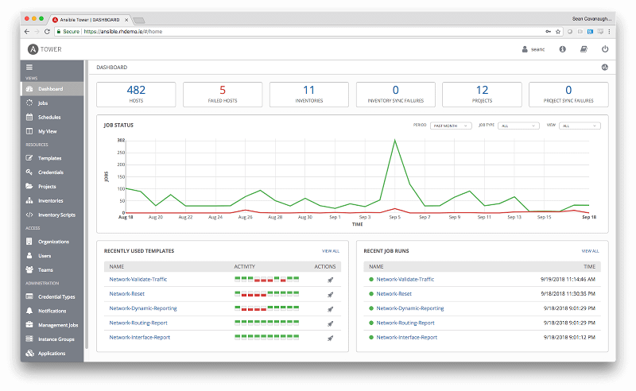
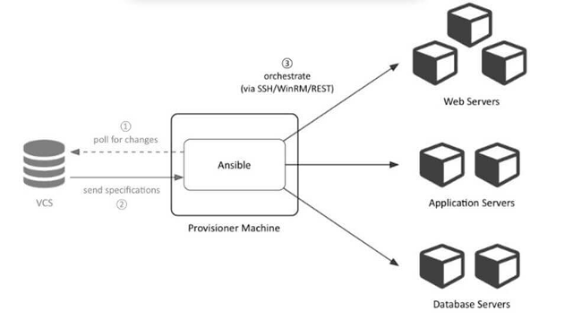

Сейчас существует очень много различных программ, которые помогают правильно настроить то или иное программное обеспечение. Для того, чтобы программа эффективно работала, необходимо воспользоваться реальной или виртуальной машиной. Также, имеет смысл воспользоваться программным окружением Vagrant, которое поставляется вместе с программой Ansible после покупки лицензии. Прежде чем приступать непосредственно к настройке программы, необходимо узнать, что это вообще такое и какие функции выполняет.
Данная программа нужна для того, чтобы управлять различными программными конфигурациями для того, чтобы разрабатывать приложения на языке Python. Ansible представляет собой список программ, объединенных в пакет для управления специальными конфигурациями. Благодаря данному пакету программ можно настраивать те или иные удалённые машины и управлять ими на большом расстоянии. На сегодняшний день настройка программы Ansible осуществляется путём изучения пособия по следующим главам:
Сама по себе, данная программа (один из вариантов графического интерфейса) выглядит так:

В чём заключается настройка программы Ansible на практике?
Утилита Ansible работает в проталкивающимся режиме. Он включает в себя использование всех настроек главной машины, с которой и осуществляются все наработки и разработки узлов. Основная машина тянет определенные узлы и ветки, осуществляя поэтапную постепенную нагрузку системы вместе с ее настройкой.
Как показала практика, для работы данной утилиты достаточно иметь следующие типы модулей:
Следует сказать, что прежде чем устанавливать данную программу, необходимо понять, что она работает исключительно на Linux и его дистрибутивах. Как правило, самыми популярными дистрибутивами Linux для работы программы Ansible являются Ubuntu или дебиан. Через командную строку нужно запустить соответствующую команду, которая отправить запросы на запуск установщика Ansible. Внутри нужно будет найти соответствующие пакеты, которые потом должны быть переписанные в командную строку. После того, как программа Ansible было установлена, нужно будет постепенно перейти к установке дополнительной утилиты, которое было упомянута выше. Данная утилита носит название Vagrant.
В качестве основной среды для установки данной программы лучше всего использовать так называемую виртуальную машину. Виртуальная машина нужна для того, чтобы не нагружать основную систему и создать дополнительную среду для Vagrant. Сам по себе, процесс установки данной программы включает в себя скачивание следующего софта:
Дальнейшим этапом будет создание работающего файла виртуальной машины. Команда, запускающая программу в виртуальной машине, выглядит таким образом: «vagrant up». После ее активации процесс запустится и можно переходить к другим шагам. Для некоторых систем потребуется получить права суперпользователя или ввести Root ключ. Его нужно заранее узнать у администратора или вспомнить, если речь идёт о домашнем персональном компьютере. В виртуальной машине нужно будет добавить соответствующие ключи SSH, дабы продолжить процесс. Процесс будет запущен спустя несколько минут после того, как соответствующие команды будут введены. Программа взаимодействует следующим образом:

Дальнейшим этапом будет создание файла inventory. Для того, чтобы создать соответствующий файл, необходимо прописать в нём следующие команды.
host0.example.org ansible_ssh_host=192.168.33.10 ansible_ssh_user=root
host1.example.org ansible_ssh_host=192.168.33.11 ansible_ssh_user=root
host2.example.org ansible_ssh_host=192.168.33.12 ansible_ssh_user=root
Следует сказать, что строка под названием «ansible_ssh_host» содержит в себе уникальный адрес IP хоста. Его должен знать каждый человек, который устраивает полную настройку системы.
Завершающим этапом всех манипуляций, которые были приведены выше, является полная проверка путем вписывания соответствующих строк кода в командную строку. Первым делом нужно будет выполнить следующую команду:
ansible -m ping all -i step-01/hosts
При первых этапах проверки Ansible пытается запустить модуль под названием ping. В том случае, если программа работала верно, то и результат будет выглядеть следующим образом:
host0.example.org | success >> {
"changed": false,
"ping": "pong"
}
host1.example.org | success >> {
"changed": false,
"ping": "pong"
}
host2.example.org | success >> {
"changed": false,
"ping": "pong"
}
Если данного кода нет, то что-то не так и необходимо будет искать решение проблемы на сторонних ресурсах. Консультирование со специалистом поможет избежать проблем в будущем. Всё, узлы настроены и теперь можно переходить к дальнейшим действиям.
Для того, чтобы узлы могли взаимодействовать между собой, необходимо воспользоваться одноимённой командой ansible. После того, как она была введена, узлы будут взаимодействовать между собой и передавать друг другу определенные массивы зашифрованной информации.
Использование одной команды для запуска нескольких узлов является очень важной вещью в создании качественно работающих систем. Если в одну систему были собраны определённые машины под управлением одной и той же операционной системы, то стоит ввести следующую команду, так как вся информация будет собрана на одну машину, с которой эта самая команда и была введена.
ansible -i step-02/hosts -m shell -a 'uname -a' host0.example.org
Если всё было правильно сделано, то все хосты должны дать следующий вывод касательно своего статуса:
host1.example.org | success | rc=0 >>
DISTRIB_RELEASE=12.04
host2.example.org | success | rc=0 >>
DISTRIB_RELEASE=12.04
host0.example.org | success | rc=0 >>
DISTRIB_RELEASE=12.04
Каждый элемент будет подсвечен, а также будет передан его статус. Для того, чтобы получить гораздо больше информации касательно того или иного элемента, нужно вести другую команду с модулем setup. Данный модуль собирают гораздо больше информации с каждого узла, точно также передавая ей на основную платформу. В качестве примера ответа будет следующая конструкция:
"ansible_facts": {
"ansible_all_ipv4_addresses": [
"192.168.0.60"
],
"ansible_all_ipv6_addresses": [],
"ansible_architecture": "x86_64",
"ansible_bios_date": "01/01/2007",
"ansible_bios_version": "Bochs"
},
---snip---
"ansible_virtualization_role": "guest",
"ansible_virtualization_type": "kvm"
},
"changed": false,
"verbose_override": true
Выводы можно сокращать для того, чтобы получать более простые конструкции, однако их суть останется прежней.
Архитектура Ansible включает в себя следующие разнообразные модули:
Также, сюда можно включить еще множество различных модулей для правильной работы удаленных машин. И, как мы уже говорили, Ansible работает исключительно на дистрибутивах Linux и не содержит в себе протоколов для работы с Windows или Mac OS. Основными дистрибутивами для работы Ansible являются Debian и Ubuntu. Удачи вам в освоении мира DevOps!